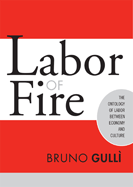

Can work exist outside of capitalism?
Can work exist outside of capitalism?


 Can work exist outside of capitalism?
Can work exist outside of capitalism?

|  |
Labor of FireThe Ontology of Labor between Economy and CultureBruno Gull�paper EAN: 978-1-59213-113-6 (ISBN: 1-59213-113-1) |
"My sense is that Gull�'s work (along with that of a few other young scholars) will renew once again the Marxist tradition. This will not be a scientific Marxism or a humanist Marxism or a structuralist Marxism. It is rather a very philosophical approach to Marx that is nonetheless centered on the concept of labor and its power of social transformation."
—Michael Hardt, Duke University
In Labor of Fire, Bruno Gull� offers a timely and much needed re-examination of the concept of labor. Distinguishing between "productive labor" (working for money or subsistence) and "living labor" (working for artistic creation), Gull� convincingly argues for a definition of work that recognizes the importance of artistic and social creativity to our definition of labor and the self.
Gull� lays the groundwork for his book by offering a critique of productive labor, and then maps out his productive/living labor distinction in detail, reviewing the work of Marx and others.
Excerpt available at www.temple.edu/tempress
"Labor of Fire is an intelligent book that develops its argument around the Marxist critique of political economy with labor and its contradictory locations as the central concern. Gull� covers a range of issues, and he engages with specific arguments and texts well. Whether one agrees with the positions taken or not, it must be acknowledged that the discussions of philosophy/political economy relations will prove stimulating, innovative, and provocative."
—Bryan D. Palmer, Canada Research Chair, Trent University
"[The] interpretive elements from the history of philosophy are among the nicest parts of Gulli's book�.[He] makes some excellent observations�"
—Contemporary Sociology
"[T]his is an important book for three interrelated reasons: It reminds us of why Marx still matters. It probes for what might be the promise for humanity...and it highlights the centrality of labour to human freedom, creativity, and happiness."
—Labour/Le Travail
"The introductory chapter�features numerous cogent statements�Gulli offers a Marxist critique of political economy, and there is much value in studying the idea of productive and unproductive labor from a Marxist standpoint. In fact, I believe it is the best way to understand modern capitalism and class exploitation�In Labor of Fire, Marx is made very intriguing�Gulli�s thesis that labor is a sovereign, self-determining quality unattached to the marketplace is a message that labor education students would benefit from hearing."
—Labor Studies Journal
Acknowledgments
Introduction
1. The Ontology of Labor: Problems of the Relationship between Philosophy and Political Economy
REMARK: The Productive Power of Capital
2. On the Difference between Living Labor and Productive Labor
REMARK: 1. Dialectic and metaphysics
REMARK: 2. Vulgar metaphysics and poetic metaphysics
3. Radicalizing the Ontology of Labor: Institution and Utopia
4. The Solitude of Labor: On the Relationship between Creative Labor and Artistic Production
Notes
Bibliography
Index
 | Bruno Gull� teaches philosophy at Long Island University, Brooklyn Campus and at Kingsborough Community College. |
Labor Studies and Work
Sociology
Philosophy and Ethics
Labor in Crisis, edited by Stanley Aronowitz.
The hope for a revived progressive movement in American politics and culture depends to a large extent on the possibility of a revived labor movement. This series will stimulate debate and discussion about the state of the American labor movement and its relation to the future of America by publishing short, provocative books that offer varying analyses and prescriptions for labor's revival as well as diverse assessments of its prospects. Books in the series will be relevant to a vision of the labor movement that presupposes movements and people who care about the chances of more equality, more democratic participation in the institutions of political and social life, and more power for those traditionally excluded from economic and political decision making.
© 2015 Temple University. All Rights Reserved. This page: http://www.temple.edu/tempress/titles/1766_reg.html.